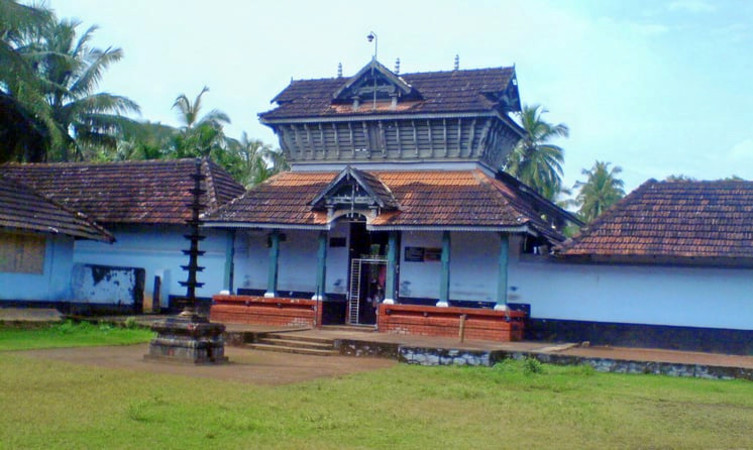

Malappuram
Malappuram is one of the 14 districts in the Indian state of Kerala, with a coastline
of 70 km. It is the most populous district of Kerala, which is home to around 13% of the total population
of the state.The district was formed on 16 June 1969,It is the third-largest district of Kerala by area,
as well as the largest district in the state bounded by Western Ghats and Arabian Sea to the two sides.
Malappuram is the third major contributing district to the Gross State Domestic Product of Kerala as of
2019, after Ernakulam and Thiruvananthapuram.
Places to Visit in Malappuram
- Kadalundi Bird Sanctuary.
- Kovilakoms.
- Kodikuthimala.
- Arimbra Hills.
- Shanthitheeram Park.

The Kadalundi Bird Sanctuary or the Kadalundi Nagaram, is definitely one of the best places to visit in Malappuram. It sits right at the spot where River Kadalundi Puzha flows into the Arabian Sea.Easily accessible from Malappuram and Kozhikode, the bird sanctuary is host to about 100 species of native birds, and about 60 species of migratory birds. This includes Whimbrels, brahminy kites, terns, seagulls, sand plovers, sandpipers, green shanks and turn stones, all of whom appear to their respective seasons.

he royal residence of the ruling family of Nilambur, the Kovilakoms is one of the best attractions in the list of Malappuram tourist places. There are a number of houses and sections in the premises, with a few of the oldest ones dating back to almost 200 years old. The unique architecture of the place is what attracts tourists from all around the world to have a look at the beauty that this place is. In a section of the fort, the royal family still resides. Most importantly, the best attractions of the site are the gardens of the residence.

Another attraction of Malappuram that is often compared to the famous town of Ooty, Kodikuthimala is definitely a sight for the sore eyes. A hill station of Kerala, the place is perched on a height of about 522 m above sea level, and is the highest point in the Amminikkadan hills. Once the spot where the Britishers once hoisted their flag, the spot was opened for tourism only a few decades ago, with a large area of the place marked already for future development projects. There is a watch tower on the top of the hill from where tourists can get a panoramic view.

Arimbra Hills or Mini Ooty is one of the most scenic places to visit in Malappuram. The place is called mini Ooty because of its resemblance to the hill station of the same name, and a rather famous one at that. Located at a height of about 1,050 feet above sea level, you can get a breathtaking view of the area around. Not just that, on the top of the hill, you can get to see a number of stone crushers, plantations, and a few Jain temples as well.

Shanthitheeram Park, or the Shanthitheeram Riverside Park to be specific, is known to be one of the most famous Malappuram Tourist Places and is a great spot to hangout for the locals, and tourists, alike. Located on the banks of the river Kadalundi, the park has a number of activities to offer. You can be a part of the excitement of boating, that is available as both pedal boating and riding on a coracle (bowl boat), or as the locals call it, Kuttavanchi. You can also take up off-road ATV riding and much more while visiting here.